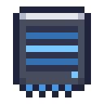

Storage
Storage Drives in a Drive Rack, joined by Storage Links to a Storage Terminal and to Ports, make one storage network. It keeps any number of kinds of item and fluid, finds any of them from the terminal, and moves them in and out of chests, tanks and machines on its own. Nothing in it needs power, and nothing switches off.
A Drive Rack holds the drives. Put a drive in it.

Storage Links run from the rack to whatever else belongs to the network.

A Storage Terminal on the links shows all the network keeps.

A Port between the links and a chest moves what is in the chest onto the drives.

A terminal's screen, a rack's, a Port's, an Assembler's, a Processor's, a Dock's, an Access Point's.
Drives and racks
A drive holds as many kinds as you like: a kind costs nothing but what there is of it. A bucket of fluid takes the room of one item. What a drive holds goes with it, so a drive moved to another rack takes everything with it, and its tooltip says how full it is.
| Drive | Holds | Made |
|---|---|---|
| Storage Drive | 262,144 | at a crafting table |
| Dense Drive | 8,388,608 | in the Fabricator, from a linear layer photomask |
| Stacked Drive | 268,435,456 | in the Fabricator, from a transformer photomask |
| Deep Drive | 8,589,934,592 | from eight Stacked Drives, to the plans on the relay schematic |
 Crafting
Crafting


 Crafting
Crafting

 Crafting
Crafting


A Drive Rack holds eight drives of any size. Beside each bay a light shows how full its drive is: dim while it is empty, teal while it has room, amber once it is three quarters full, red when it is full.
The Drive Dock
A Drive Dock, from a matrix multiply photomask, moves what drives hold far faster than a Port: 2,048 items a tick, 40,960 a second, or 256 buckets a tick. Put it on the network and drives in its left bays, and it takes them one at a time. Set by the button beside its window, it either empties each drive into the network or fills it from the network; a drive it has finished, emptied, full, or with nothing more to be had, comes out on the right. Beside a rack nothing limits it. Through a link it goes as fast as the link does.
To move everything to a larger drive, fill the larger drive here, or empty the old one into a rack that holds the new.
Links
Storage Links join racks, terminals and Ports into one network. Every storage block that touches another joins it, on any face, except a Port's front. There are no channels and no limit on how many blocks a network joins. Storage Links are not the signal cables models are wired with: the two never connect.
Crafting

What a link limits is how much goes along it. You can watch it go: the things themselves ride on the link, over a pulse of light, teal going into the network and amber coming out; a fluid's pulse is its own color. A link carries 1,024 items a tick, 20,480 a second, or 128 buckets a tick. What a Port or a Dock moves takes the shortest way to the nearest rack, and everything sharing a stretch of link shares its 1,024 evenly. Nothing stops when a link is full; the rest just waits for the next tick, the pulses along that way turn red, and the Port's screen says so. A second line beside the first carries as much again, and a rack near the Ports that use it most saves the links altogether.
A Link Driver joins a storage network on any face and a power network through Power Cables. While it has power, every link of its network carries 4,096 items a tick. It burns 40 FE for each tick a link would otherwise be full, and nothing while they have room. Without power everything goes on at the plain rate. Use it to see its power and what the links carry now.
Crafting


The Storage Terminal
Crafting

The terminal shows everything its network keeps, with how many of each kind, and lights up once its network has somewhere to keep things.
- Click a kind to take a stack, right-click to take half, shift-click to move a stack into your inventory.
- Click the grid with a stack to put it in, right-click to put in one. Shift-click a stack in your inventory to put it away.
- Click the grid with a filled bucket or tank to pour it in; the empty one stays in your hand. Click a fluid with an empty one to fill it. Right-click with a filled bucket, and the bucket itself goes in.
- The button beside the search box sorts by name (Az), by how many (#) or by mod (@); shift-click it to reverse.
The search box finds things by name, every word at once. Other facts take a sign before them:
| Search | Finds |
|---|---|
ingot | names holding "ingot" |
@minecraft | things from that mod |
#ingots | things with a tag holding "ingots" |
$hunger | tooltips holding "hunger" |
*copper | ids holding "copper" |
-iron | everything except what holds "iron" |
iron | gold | either one |
(log | planks) -oak | groups |
>64, <10, =1, >=1k | how many are kept (k for thousands, m for millions) |
@minecraft ingot -iron finds every ingot but iron, and >1k everything there are more than a thousand of. Names and
tooltips written in Chinese answer to their pinyin as well, in whole syllables, in the first letters of them, or in just the
first letter of each: 铁矿石 is tiekuangshi, tkshi or tks.
Beside the window is a slot for a model: a Checkpoint, or a Relay Card tuned to a Model
Server, whose model passes Retrieval (Models and Tests). Start a search with ? and write what you want, the way
you would say it: ?something to light a cave. The model reads what you wrote and says how likely it is to be about each of
its twenty uses, and reads the name of each thing the network keeps the same way, once for each thing, keeping where it put it.
A thing fits as far as the two agree, and what fits comes first, the best first, though its name has no word of what you wrote;
a thing's tooltip says how far it fits. What agrees less than 36 parts in a hundred, about as far as two readings each six
parts in ten sure of the same use, it leaves out. With no model, or one that has not passed, ? goes by your words alone:
anything whose name holds one of them. The model reads only English, as models do.
Under that slot is a crafting grid. Things go in as at any crafting table, and each craft's ingredients come again from the network as long as it has them, so shift-clicking the result crafts until there is no more room or nothing left to craft with. What is in the grid goes back to the network when the screen closes.
With JEI beside the screen, its search box and the terminal's hold the same words. Its + on a crafting recipe lays the recipe in the grid from the network and your inventory, marking what neither has, and with Ctrl asks the network for what it can make. Its + on an Assembler's or a Processor's screen draws the recipe there, and things dragged from its list onto a filter or a pattern's cells name them.
Wireless Terminals
A Wireless Terminal is a Storage Terminal's screen in the hand. Use it on an Access Point to tune it to that network, then use it anywhere in reach, or press the key you give it in the controls to open the first one in your inventory.
Crafting

An Access Point comes from an attention photomask and joins its network like any storage block. It reaches 528 blocks, in every direction; with power in a Link Driver on the same network, 2,112. Any number can stand on one network, and a terminal goes by the nearest. A network far off stays loaded for as long as the screen is open.
Beyond that lie the relays. Put a Relay Card in an Access Point's slot, tuned to a Model Server whose relays cover the Access Point, and its terminals reach the network anywhere those relays cover, however far from home (Serving Models).
Portable Drives
A Portable Drive, from a linear layer photomask, holds 1,048,576 items of any number of kinds and opens its own terminal screen in the hand, with no rack, link or power. In a rack it works like any other drive, and a Dock fills or empties it at full speed, so it carries a share of the network out to wherever the work is and back.
Ports
A Port holds its front against an inventory (a chest, a barrel, a furnace or any other machine) or a tank and moves things between it and the network: 64 items a tick, 1,280 a second, and 8 buckets a tick, 160 a second, whichever the block in front holds. Placed against a block, it faces that block; sneak-use one of its faces to turn its front there. Its sides show what it does, and light while it moves things.
Crafting


- Import takes everything from the inventory into the network; with a filter, only those kinds. Under a furnace it takes the furnace's output.
- Export puts the kinds its filter names into the inventory, as long as the network has them and the inventory has room.
- Stock keeps the inventory holding a set number of each kind its filter names: it tops each one up from the network, and takes any extra back.
- Window opens the inventory to the network, which keeps items there and takes them out as if it were a drive. A window with a higher priority is filled first, and a filter limits what may go in.
To set the filter, click one of its slots with a stack, or shift-click the stack in your inventory; click a slot empty-handed to clear it. A filled bucket in the filter names its fluid. Stocking counts a fluid in buckets. The screen says how many items the Port moved in the last second.
A Port can also filter by what things are. Put a filter model in the slot beside its screen: a Checkpoint, or a Relay Card tuned to a Model Server, whose model passes Sorting (Models and Tests). Then a filter slot holding something renamed Food, Plants, Wood, Stone, Ores or Tools stands for that whole kind: importing, the Port takes every thing the model says is of it; exporting, it hands out every such thing the network holds. The model is asked about each thing once, by name, as the sorting test asks; a thing it is not sure of counts as other. Stocking keeps to things, not kinds.
Exporting or stocking, a Port can ask for what it lacks. With the crafting table beside its screen on, it looks once a second at each thing its filter names, and if there is too little of it, in the network and in the inventory together when stocking, in the network when exporting, it has the network make the rest: one job at a time for each thing, listed under Jobs like any other.
A Port does more than its mode. Programs, on its screen, takes Program Cards, and with a written one in it, it does what the card says instead: it can work on what is 48 blocks away, move fluid and energy too, dig, place, right click and strike, and listen for what happens around it. A Port's own mode always moves 64 items a tick; a program moves what its upgrades allow. See Programs.
A rule asks only once things are short, and a long job then runs late. A target model asks ahead. Put a checkpoint or a tuned Relay Card whose model passes Demand (Models and Tests) in the slot beside the filter model's. Every five seconds the Port writes down a digit for how much of each thing went out, and the model reads that line and writes the next eight looks. If it is sure of every one of them, the Port has what they add up to made before it is needed, on top of what it keeps; if it is not, the Port goes back to the rule. Point at the slot to see what it expects. A Field Log in the slot under it keeps a copy of these lines, and in a Model Core's data slot it is practice on your own base.
Assemblers
An Assembler on the network crafts one recipe from what the network keeps, and puts the result back. Draw the recipe in its grid the way you would on a crafting table: click a cell with a stack to put that kind there, or empty-handed to clear it. The grid holds pictures, not items. What the recipe makes shows beside it, and the Assembler waits while its screen is open, so a recipe half drawn never crafts.
Tell it how many of the result to keep. Whenever the network holds fewer, it crafts, up to four crafts a tick, as long as the network has the ingredients; whatever a recipe leaves behind, such as an empty bucket, goes back into the network. One Assembler can keep another stocked: one that keeps sticks lets one that makes torches go on as long as there is coal.
An Training Accelerator touching an Assembler, directly or through another Accelerator (past the first four they take power), lets it make four more crafts a tick, and half that with nothing to cool it. Assemblers with the same recipe share a job's crafts, so what a network can make in a tick grows with every Assembler and every Accelerator you give it.
Crafting

Processors
A Processor runs a machine for the network: a furnace, a Smelter, a brewing stand, any block that takes items and gives them back. Place it against the machine, so that its front faces it, and link it to the network through any other face. Its screen shows one round: on the left what goes in, on the right what comes out, and between them the machine it stands against. Click a cell with a stack to put that many there, or right-click for one more; empty-handed, a click clears the cell and a right-click takes one off. Each grid has nine pages, 81 cells in all, and holds pictures, not items.
What goes in goes in the order you draw it, so a furnace's ore comes before its coal: eight raw iron and a coal in, eight iron ingots out. The first thing it makes is what the network can ask it for, and anything else comes along with it.
A round goes in whole or not at all, up to 64 items a tick, and the Processor takes what the machine makes back as it appears. It waits to be asked, and if you tell it how many to keep, it also works whenever the network holds fewer. Processors with the same pattern share a job's rounds, each on its own machine, so ten furnaces work ten times as fast.
Crafting

Asking for things
What the network's Assemblers and Processors can make shows in the terminal too: with Craft in place of a count when there is none of it, and with a teal corner when there is. Click it, or middle-click or Ctrl-click one there is some of, to ask for an amount. The terminal plans it as you type: a tree of everything it takes, each step with how many come from storage, how many crafts make the rest (×) and how many are missing (−).
Start it, and the network's Assemblers and Processors work through the plan, any number of jobs at once; those with the same recipe share its crafts. What a job makes along the way it keeps to itself until it is done, so nothing else takes it first. A job may start with something missing: it waits, and goes on as soon as what it lacks reaches the network. When it is done, everything it made goes into the network, and you hear so wherever you are.
Jobs, beside the search box, lists the jobs running on the network, how far each has got and what it waits for; × stops one, and what it has made so far goes back into the network. Click a job to see its plan as a tree, the way it was planned, each step under the step that needs it, with how many of its crafts are done.
Ports and agents ask too. A Port asks for what it lacks, and an agent runs craft 8 torch, and supply goes after what
a job lacks: out of the chests and barrels around its home, or mined, and into the network (Agents).
Alt-click a kind in the grid to pin it to the top, up to 18 for each terminal, and Alt-click it again to let go; a pinned kind stays there with none of it left. What a running job makes comes after the pins by itself, with a bar along the foot of its cell for how far the job has got.
A Drive Rack, a light beside each drive in it.
Storage Links carry what the network moves.
The Storage Terminal finds anything the network keeps.
A Port importing the chest in front of it.
 Iron IngotWaferRedstone DustStorage DriveStacked DriveSchematic: RelaysDeep DriveTensor CasingCopper IngotDrive Rack
Iron IngotWaferRedstone DustStorage DriveStacked DriveSchematic: RelaysDeep DriveTensor CasingCopper IngotDrive Rack GlassStorage Link
GlassStorage Link Block of CopperTraining AcceleratorLink DriverGlass PaneStorage Terminal
Block of CopperTraining AcceleratorLink DriverGlass PaneStorage Terminal

 Amethyst ShardWireless Terminal
Amethyst ShardWireless Terminal HopperPistonPort
HopperPistonPort Crafting TableWeight CrystalAssemblerFurnaceProcessor
Crafting TableWeight CrystalAssemblerFurnaceProcessor